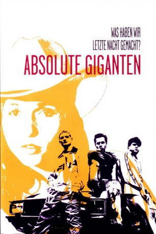

#1250 Absolute Giganten
Alternativ: Gigantics (Originaltitel)
 
 IMDB-Wertung: 7.7 / 10
IMDB-Wertung: 7.7 / 10  Metascore: 0
Metascore: 0 
Die drei Hamburger Jungs Floyd, Ricco und Walter sind dicke Freunde. Walter ist Lackierer in einer abenteuerlichen Hinterhofwerkstatt, Ricco hält sich für einen großen Rapper und jobbt in einem Schnellimbiss. Für Floyd beginnt ein neuer Lebensabschnitt: nachdem er eine Bewährungsstrafe abgebüßt hat, kann er auf einem Containerschiff anheuern. Wahrscheinlich aus Angst vor der Reaktion seiner Freunde teilt er diesen seine Entscheidung erst einen Tag vorher mit. Nach anfänglicher Niedergeschlagenheit genießen die drei noch einmal richtig ihren letzten Abend in der Hafenstadt Hamburg. Dabei erleben sie sowohl lustige als auch traurige und dramatische Geschichten, die die Freundschaft der drei und die Melancholie des Abschieds einfangen.
Jahr: 1999
Dauer: 80 Minuten
FSK: 6
Land: Deutschland Studio: Senator FilmTonspuren:
Untertitel: Deutsch,
Auflösung: 1080p (1920x1040) Größe: 8448 MB
Genre: Komödie, Drama
Regisseur: Sebastian Schipper
Drehbuch: Sebastian Schipper
Soundtrack:
Darsteller:
 Florian Lukas als Ricco
Florian Lukas als Ricco Antoine Monot Jr. als Walter
Antoine Monot Jr. als Walter Jochen Nickel als Snake
Jochen Nickel als Snake Johannes Silberschneider als Hans
Johannes Silberschneider als Hans Peter Franke als Meister
Peter Franke als Meister- Frank Giering als Floyd
- Julia Hummer als Telsa
- Albert Kitzl als Elvis
- Guido A. Schick als Dulle
- Silvana Bosi als Walters Oma
- Marcnesium als Typ mit Rastalocken
- Barbara de Koy als Irmgard
 Gustav-Peter Wöhler als Horst
Gustav-Peter Wöhler als Horst- Michael Sideris als Dieter
- Hannes Hellmann als Klaus
- Alfons Lütje als Bewährungshelfer
- Sven Pippig als Pornomann
- Joshy Peters als Alfa-Fahrer
- Andreas Schröders als Burger-Manager
- Richard Beek als Tankwart
- Martin Pawlowski als Arzt
- Ina Holst als Riccos Mutti
- Anna von Krosigk als Riccos Schwester Manuela
- Jessica Persson als Riccos Schwester Chantal
- Joel Mouton als Riccos Brüder
- Jannik Mouton als Riccos Brüder
- Sabrina Brumm als Girlie
 Paula Paul als Tresenfrau Disco
Paula Paul als Tresenfrau Disco- Stein als Elvis
- Speedy als Elvis
- Faust als Elvis
- Christian Ostertag als Elvis
- Mirko Hufari als Elvis
- Michael Sander als Fußballspieler
- Theodor Lewin als Fußballspieler
- Emil Senioch als Fußballspieler
- Sascha Imbusch als Fußballspieler
- Jona Sadhana Stümpfnagel als Fußballspieler
- Bola Adebesi als Fußballspieler
Datei: X:\1999\Absolute Giganten (1999, FSK6, 1920x1040).mkv seit 12.06.2015
Festplatte: HD 1996-2002
 Es gibt insgesamt 81 Filme in der Gruppe '1999'
Es gibt insgesamt 81 Filme in der Gruppe '1999'